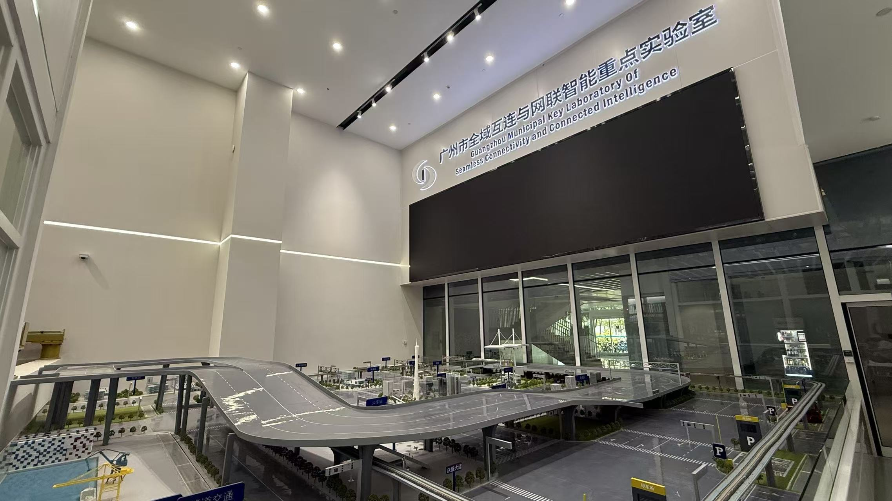
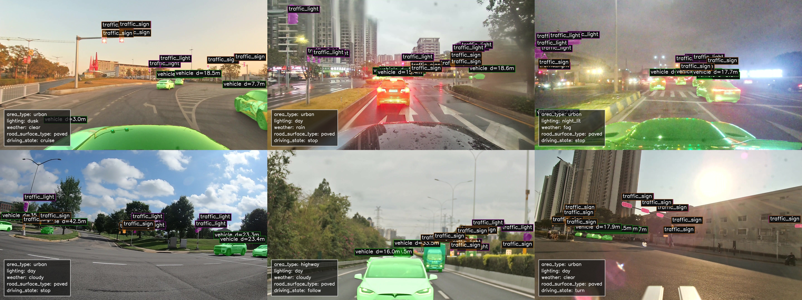
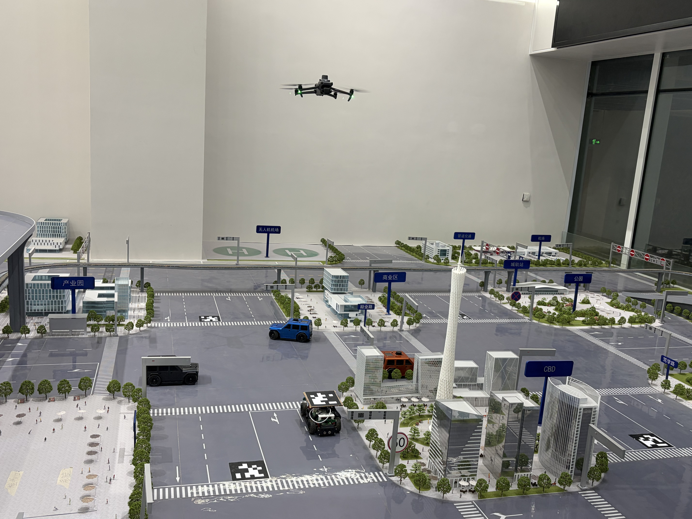

Unified World Models
Developing unified representations and predictive models for understanding multimodal physical environments.
KITE LAB · HKUST(GZ)
KITE Lab studies world models, embodied AI safety and evaluation, and intelligent transportation systems through data-driven modeling and physical-world experimentation.

About KITE Lab
KITE Lab is an academic research laboratory in the Intelligent Transportation Thrust of the Systems Hub at The Hong Kong University of Science and Technology (Guangzhou).
Led by Ke Ma, the lab studies intelligent transportation systems through representations, evaluation, and physical-world experimentation.
What we study
Four connected directions organize KITE Lab's work on models, safety, intelligent systems, and physical interaction.
Developing unified representations and predictive models for understanding multimodal physical environments.
Studying the safety, reliability, and behavioral evaluation of embodied AI and autonomous systems in complex physical environments.
Exploring cooperative intelligent systems that connect ground vehicles, aerial platforms, sensing, simulation, and experimental validation.
Learning compact latent representations for physical-world understanding, prediction, reasoning, and interaction.
Our research is connected by a unified latent world-model perspective for Physical AI.
Selected work

Production Autonomous Vehicle Evaluation Dataset
PAVE is a real-world production autonomous vehicle evaluation dataset built from synchronized multimodal data collection. It brings together vehicle platforms, sensor streams, trajectories, vehicle-state signals, and AV/HV labels to support behavior, safety, and system-level evaluation.
Production Autonomous Vehicle Evaluation studies how embodied systems behave in complex traffic. The program connects scenario-level testing with behavioral, safety, and performance analysis, using task-based, metric-based, and residual comparisons to identify reliability and risk.
People
Lab Director · Assistant Professor
Thrust of Intelligent Transportation, Systems Hub
The Hong Kong University of Science and Technology (Guangzhou)
Embodied Intelligence for Transportation and Physical AI, with emphasis on safety, stability, and evaluation.
Research in practice
Connected environments support real-world data collection, ground–air experiments, and repeatable physical-world validation.

Production vehicles, synchronized multimodal sensing, and real-world experiments.
Scaled ground vehicles, UAV platforms, and repeatable connected experiments.
Multimodal data processing, model development, simulation, and evaluation workflows.
Selected output
Li, Z., Meng, H., Ma, C., Ma, K., & Li, X. · Transportation Research Part E: Logistics and Transportation Review
DOILiu, T., Ma, K., Liu, Y., & Li, X. · Proceedings of the 2026 IEEE 29th International Conference on Intelligent Transportation Systems (ITSC)
Ma, C., Zhou, H., Zhang, P., Ma, K., Shi, H., & Li, X. · Communications in Transportation Research, 5, 100204.
DOIZhang, Y., Ma, K., Xu, Z., Zhou, H., Ma, C., & Li, X. · Transportation Research Part B: Methodological, 200, 103316.
DOIContact
For research collaboration and general inquiries, contact KITE Lab at HKUST(GZ).